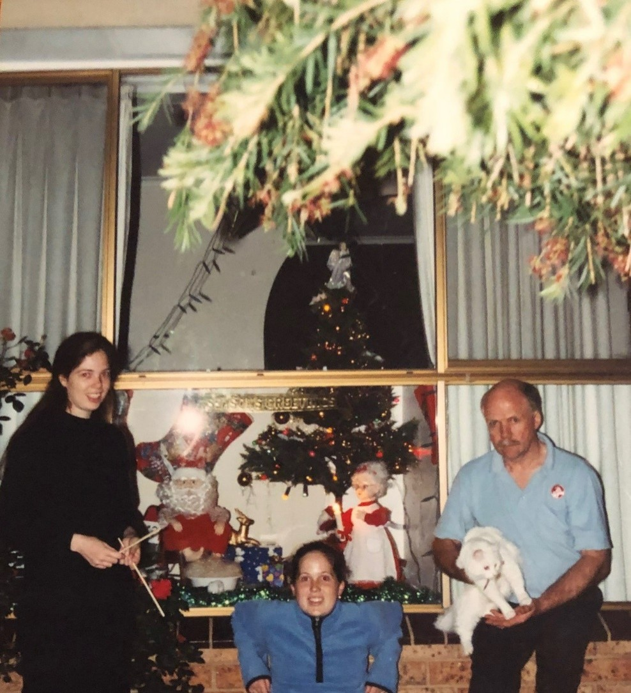

From Christmas Windows to Business Analysis: A Personal Journey in Design and Collaboration
June 2025
When I was growing up, my family had a large picture window at the front of our house — the perfect canvas for our annual Christmas display. Each year, my siblings and I would take turns choosing the theme for that window. It felt like play, but looking back, it was an early introduction to many of the skills I now use every day as a business analyst. We had to think about storytelling, composition, materials, budget, and timelines. We had to clearly communicate our vision and get buy-in from the rest of the family — much like working with a project team. There were negotiations, trade-offs, creative problem-solving, and always a sense of delivering something that others would enjoy. That spirit has stayed with me. These days, I build Lemax village displays during the holidays. It might sound whimsical, but it's surprisingly similar to BA work. I have constraints: space, time, even the number of power outlets I can use. I work with different "clients" (sometimes setting up displays in other people’s homes), and my goal is always to make the process smooth and enjoyable for them. I tailor the design based on what’s important to them — whether the village will be viewed at night (where light and shadow play a key role) or during the day (where colour, structure, and layout carry more weight). Whether it’s a miniature snowy street or a complex business process, I’m always thinking about the story, the people involved, and how to bring a vision to life in a way that’s meaningful, efficient, and engaging. It turns out, Christmas windows and tiny holiday villages weren’t just hobbies — they were training grounds.

Designing for Others Starts with Listening
June 2025
In both life and work, I’ve found that good design has less to do with tools — and everything to do with empathy. It starts not with solutions, but with listening.
A Personal Story: Lemax Displays and Lightbulb Moments
Every year, I help set up Lemax villages — those miniature festive towns with glowing street lamps, moving ice skaters, and snowy rooftops. But I don’t just walk in and decide what I think looks good. Before placing a single house or tree, I ask:
What part of the village brings you the most joy?
Do you want it to feel calm and symmetrical — or playful and packed with detail?
What’s one piece you want to make sure everyone notices?
Sometimes, it’s a piece that evokes a memory. Sometimes, it’s about where the kids will look first. Each answer helps shape how I create the scene — because I’m not building for me. I’m building for them. And honestly? That’s the same mindset I bring to stakeholder engagement.
Empathy as a BA Skill
In business analysis, it’s easy to rush into mapping processes, documenting requirements, or analysing systems. But lasting impact — the kind that makes people say “this actually helped” — starts way earlier. It starts when you:
Ask someone what frustrates them the most.
Listen without jumping in to solutionise.
Understand what success would feel like for them.
Take in not just what’s said, but what’s not said.
Stakeholder engagement is not about ticking a checklist. It’s about building trust, being curious, and co-creating something that works for the real people involved.
The Takeaway
Whether I’m adjusting snow to reflect someone’s memory of childhood winters, or helping teams navigate tricky change, the question stays the same: “What matters most to you?” Because when we start there, what we build becomes meaningful — and memorable.